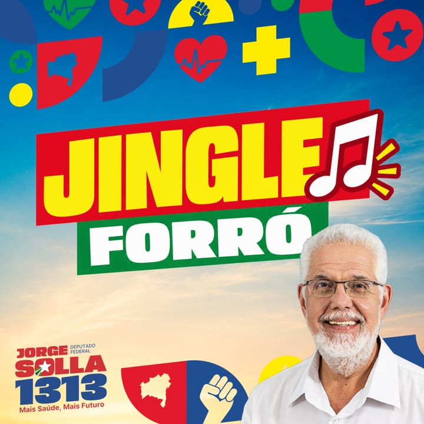
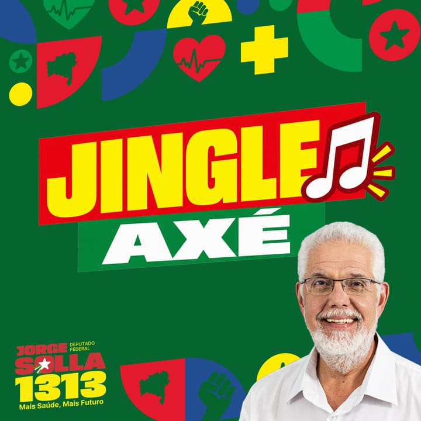

Vermelho abre. Papel explica.
Hero e chamada final ganham energia de campanha; o miolo em creme e branco muda o registro para documento público. O amarelo orienta foco e fonte, sem virar um segundo CTA.
Gate visual · S1 · 28/09/2026
Shell de campanha e home pública em linguagem editorial/documental. O vermelho mobiliza; o creme dá espaço para ler; fotografia e fonte datada sustentam cada capítulo. As cenas abaixo são o alvo visual do port, não implementação.
Hero e chamada final ganham energia de campanha; o miolo em creme e branco muda o registro para documento público. O amarelo orienta foco e fonte, sem virar um segundo CTA.
Texto avança ao lado de uma fotografia sticky no desktop e entra em fluxo no celular. Substitui a grade repetitiva atual por ritmo editorial e mantém tudo legível sem movimento.
O caso SAMU separa 2007–2010 de 2025 em duas lâminas, com papel, fase e fonte. Corrige a mistura de autoria e esfera presente no estado atual.
Pendências de publicação: o número de WhatsApp exibido nos links é o placeholder do deck e precisa ser substituído pelo número oficial; o CNPJ preserva o valor já publicado, ainda sujeito à conferência do advogado eleitoral; as duas fotografias do caso SAMU e as thumbnails dinâmicas do board estão marcadas como NEEDS ASSET.
DEGRADED: a seção de jingles das cenas 01 e 02 é proposta do tier degradado
(opencode-go/deepseek-v4.1-flash) e não está certificada — exige sign-off
humano no gate/PR. O restante do artefato permanece o design S1 sujeito à certificação do
designer frontier.
Shell, narrativa inteira, interação-assinatura, caso SAMU, mídia e participação.
Jorge Solla · Deputado Federal · 1313
Médico sanitarista. Criou o SAMU 192 e o Brasil Sorridente. Já comandou a saúde em Vitória da Conquista, na Bahia e no Brasil, e leva o mandato aos 417 municípios, da saúde à educação.

Dados mantidos por decisão da coordenação · rechecar na API da Câmara e no SitaqWeb antes do go-live.
Princípios para o próximo mandato
Seis compromissos lidos como capítulos de uma mesma história. A imagem acompanha o assunto; a prova datada aparece quando existe.
O SUS precisa de financiamento estável, atenção primária forte e remédio produzido no Brasil. Defender a saúde pública é defender a vida.
Na Bahia, como secretário de Saúde, aplicou mais de 14% do orçamento estadual na saúde em 2010, acima do mínimo legal de 12%. Em 2026, o mandato destinou R$ 10 milhões autorizados e R$ 9,5 milhões já pagos à atenção primária.

Piso digno, carreira, concurso público e aposentadoria especial para quem segura o sistema todos os dias.
Titular da comissão especial da PEC 11/2022; a Lei 14.434/2022 fixou o piso da enfermagem. Coautor da PEC 14/2021, aprovada pelo Senado em 14/07/2026, por 73 votos a 1; falta a promulgação.
Pelo fim da escala 6×1 e pela jornada de até 40 horas semanais, sem redução de salário. Jornada longa adoece quem trabalha e a conta chega ao SUS.

Universidade pública, instituto federal e escola de qualidade também longe da capital. O lugar onde você nasce não pode decidir até onde você pode estudar.
Em setembro de 2023, realizou audiências públicas em Jacobina e Jequié sobre a implantação de campus da UFBA no interior e levou ao Ministério da Educação a proposta de uma universidade federal na Chapada Diamantina.

Recomprar a Refinaria de Mataripe é defender a Bahia e a soberania do Brasil. Preço justo de combustível é política de saúde e de renda.
Em março de 2022, protocolou com a Federação Única dos Petroleiros a PEC que restabelece o monopólio público do refino, da exploração, da distribuição, dos gasodutos e da importação de derivados.

Instituições fortes, participação popular e combate à desinformação. Eleger o parlamento é coisa séria.
Em 8 de janeiro de 2025, afirmou que o 8 de Janeiro não foi um ato isolado, e sim o ápice de uma escalada autoritária, e que não haverá anistia para golpistas.

Por que essa eleição importa
É no Congresso que se define o orçamento do SUS, o piso da enfermagem, a recompra de Mataripe e o fim da escala 6×1. Reeleger Lula não basta: é preciso eleger uma bancada aliada.
Com Lula, o Mais Médicos foi retomado e o novo PAC voltou a investir na estrutura pública.
Orçamento do SUS, piso da enfermagem, jornada de trabalho e soberania precisam de maioria.
O voto para deputado decide quem sustenta os avanços e enfrenta os bloqueios.
Trabalho público · caso documentado
Papel. Criou o piloto do SAMU 192 em Vitória da Conquista (1999–2002), como secretário municipal de Saúde, e nacionalizou o programa (2003–2005), como secretário de Atenção à Saúde do Ministério da Saúde, no governo Lula. Depois, como secretário de Saúde da Bahia (2007 a janeiro de 2014), regionalizou o serviço no estado.
Fonte.
Jornal Grande Bahia, 03/01/2011
A TARDE,
14/03/2025
Briefing Geral de Militância, seção Saúde
Em 2007, o SAMU chegava a 14 municípios baianos. Em 2010, eram 233, cobrindo 74% da população.
NEEDS ASSET · foto de arquivo do SAMU/SESABR$ 243,5 milhões autorizados e 789 ambulâncias para 559 cidades do país, sendo 12 destinadas a nove municípios da Bahia. O mandato acompanhou as entregas.
NEEDS ASSET · ambulâncias entregues na BahiaTrajetória
Nasce em Salvador, em 11 de abril.
OrigemInicia a militância no Congresso de Reconstrução da UNE; preside o Diretório Acadêmico de Medicina e é diretor do DCE da UFBA.
MilitânciaForma-se em Medicina pela UFBA e participa da fundação do PT na Bahia.
FormaçãoResidência em Medicina Social pela UFBA/Inamps.
FormaçãoTorna-se médico do quadro da UFBA e conclui o mestrado em Saúde Coletiva.
FormaçãoSecretário Municipal de Saúde de Vitória da Conquista: criou o piloto do SAMU 192 na cidade, o Resgate Médico.
MunicípioSecretário de Atenção à Saúde: nacionalizou o SAMU 192 e criou o Brasil Sorridente, assinando as diretrizes da Política Nacional de Saúde Bucal.
UniãoSecretário de Saúde da Bahia nos dois mandatos de Jaques Wagner; conclui o doutorado em Clínica Médica em 2009.
EstadoToma posse como deputado federal pela Bahia; foi eleito em 2014 com 125.159 votos.
CâmaraReeleito em 2018 e em 2022; desde março de 2023 é titular da Comissão de Saúde e vice-líder da Federação Brasil da Esperança.
CâmaraAcompanhe de perto
Bastidores, caravanas e as lutas do mandato: conteúdo atualizado, direto das redes.
Snapshot mais recente preservado; a mídia só é atualizada fora do carregamento da página.
0 visualizações
175 visualizações
17/08/2026
Posts visíveis + snapshots elegíveis de YouTube e Instagram, ordenados por data. Falha de feed mantém o último snapshot; zero itens esconde toda a seção.
Ver artigos
Da gestão no SUS ao mandato na Câmara. O vídeo só carrega depois do toque.
A campanha no ar
A campanha no ar, a qualquer hora. Ouça no caminho, no trabalho, onde estiver.
Ouvir agoraPara compartilhar
As primeiras peças estão a caminho. Enquanto isso, faça seu card e mostre que você está com Solla.
Fazer meu cardA trilha da nossa caminhada
Ouça a Rádio Jorge Solla 1313 e os jingles oficiais da campanha. Dê o play e baixe o seu preferido para levar com você.
Um jingle por vez: ao tocar outro, o anterior para.


Nada toca sozinho: o play é sempre iniciado por você.
Fail-closed: jingles e fotos só aparecem quando houver publicação aprovada. A faixa some sem jingle publicado e “Fotos” entra na descoberta do footer apenas com fotos aprovadas pelo contrato C233.
Apoie e acompanhe
Deixe seu nome, WhatsApp e cidade para acompanhar a caminhada de perto.
Falar com a campanha no WhatsAppHero real, capítulos inline, evidência, trajetória, mídia e captação com alvos de 44 px.
Jorge Solla · Deputado Federal · 1313
Médico sanitarista. Criou o SAMU 192 e o Brasil Sorridente. Já comandou a saúde em Vitória da Conquista, na Bahia e no Brasil, e leva o mandato aos 417 municípios, da saúde à educação.
Rechecar antes do go-live.
Princípios para o próximo mandato
No celular, a fotografia entra depois do capítulo relacionado. Não há conteúdo preso a gesto ou animação.
O SUS precisa de financiamento estável, atenção primária forte e remédio produzido no Brasil. Defender a saúde pública é defender a vida.
Na Bahia, como secretário de Saúde, aplicou mais de 14% do orçamento estadual na saúde em 2010. Em 2026, o mandato destinou R$ 10 milhões autorizados e R$ 9,5 milhões já pagos à atenção primária.
Piso digno, carreira, concurso público e aposentadoria especial para quem segura o sistema todos os dias.
Titular da comissão especial da PEC 11/2022; coautor da PEC 14/2021, aprovada pelo Senado em 14/07/2026, por 73 votos a 1; falta a promulgação.
Pelo fim da escala 6×1 e pela jornada de até 40 horas semanais, sem redução de salário. Jornada longa adoece quem trabalha e a conta chega ao SUS.
Universidade pública, instituto federal e escola de qualidade também longe da capital. O lugar onde você nasce não pode decidir até onde você pode estudar.
Recomprar a Refinaria de Mataripe é defender a Bahia e a soberania do Brasil. Preço justo de combustível é política de saúde e de renda.
Instituições fortes, participação popular e combate à desinformação. Eleger o parlamento é coisa séria.
Em 8 de janeiro de 2025, afirmou que o 8 de Janeiro não foi um ato isolado, e sim o ápice de uma escalada autoritária.
Por que essa eleição importa
É no Congresso que se define o orçamento do SUS, o piso da enfermagem, a recompra de Mataripe e o fim da escala 6×1. Reeleger Lula não basta: é preciso eleger uma bancada aliada.
Com Lula, o Mais Médicos foi retomado e o novo PAC voltou a investir na estrutura pública.
Orçamento, piso da enfermagem, jornada e soberania precisam de maioria.
O voto para deputado decide quem sustenta os avanços e enfrenta os bloqueios.
Trabalho público · caso documentado
Papel. Criou o piloto do SAMU 192 em Vitória da Conquista e nacionalizou o programa no Ministério da Saúde; depois, regionalizou o serviço como secretário de Saúde da Bahia.
Fonte.
JGB, 03/01/2011 · A TARDE, 14/03/2025
Em 2010, o serviço cobria 74% da população baiana.
NEEDS ASSET · arquivo SAMU12 ambulâncias do novo PAC foram destinadas a nove municípios da Bahia. O mandato acompanhou as entregas.
NEEDS ASSET · entrega 2025Trajetória
Nasce em Salvador.
OrigemForma-se em Medicina pela UFBA e participa da fundação do PT na Bahia.
FormaçãoSecretário de Saúde de Vitória da Conquista: criou o piloto do SAMU 192.
MunicípioNacionalizou o SAMU 192 e criou o Brasil Sorridente, assinando as diretrizes da Política Nacional de Saúde Bucal.
UniãoSecretário de Saúde da Bahia.
EstadoDeputado federal pela Bahia; titular da Comissão de Saúde desde março de 2023.
CâmaraAcompanhe de perto
Bastidores, caravanas e as lutas do mandato: conteúdo atualizado, direto das redes.
1 de 5 · deslize para ver os próximos
0 visualizações
17/08/2026
Snapshot/lazy; falha mantém o último conteúdo e zero itens esconde a seção.
Ver artigos
Da gestão no SUS ao mandato na Câmara.
A campanha no ar
A campanha no ar, a qualquer hora. Ouça no caminho, no trabalho, onde estiver.
Ouvir agoraPara compartilhar
As primeiras peças estão a caminho. Enquanto isso, faça seu card e mostre que você está com Solla.
Fazer meu cardA trilha da nossa caminhada
Ouça a Rádio Jorge Solla 1313 e os jingles oficiais da campanha. Dê o play e baixe o seu preferido para levar com você.
Um jingle por vez: ao tocar outro, o anterior para.
Nada toca sozinho: o play é sempre iniciado por você.
Fail-closed: jingles e fotos só aparecem com publicação aprovada. Sem jingle publicado a faixa some; “Fotos” só entra na descoberta do footer com fotos aprovadas pelo contrato C233.
Apoie e acompanhe
Deixe seu nome, WhatsApp e cidade para acompanhar a caminhada de perto.
Falar no WhatsAppO conteúdo não depende de animação; a diferença é só de encenação.
Contrato de movimento
Ao centro da viewport, esta fotografia assume a área sticky por crossfade.
Ao chegar ao capítulo 04, a imagem anterior sai e este ativo entra com escala discreta.
Mapeamento 1:1: 01 Saúde · 02 Quem cuida · 03 Trabalho digno · 04 Educação e interior · 05 Bahia e soberania · 06 Democracia. No mobile e em movimento reduzido, cada fotografia aparece inline no seu próprio capítulo.
Desktop: a fotografia fica sticky enquanto os seis capítulos passam. A imagem correspondente dissolve e escala de 97% para 100% em 560–620 ms. Revelações de seção usam apenas opacidade e transformação.
prefers-reduced-motion: reduceSticky e dissoluções saem. A fotografia entra no fluxo logo após o capítulo relacionado, como na cena móvel. O scroll volta a ser instantâneo e todos os elementos nascem visíveis.
Vazio, descoberta fail-closed, recusa de consentimento e fallback de mídia.
O board de atualizações e seus links de descoberta não renderizam com zero itens visíveis. Na página da coleção, o vazio honesto permanece:
O shell mantém apenas rotas com acervo publicado. “Fotos” continua condicionado à aprovação e ao kill switch; não existe item desabilitado nem promessa vazia.
Sem o seu consentimento, não guardamos seus dados. Você pode falar com a campanha pelo WhatsApp quando quiser.
Falar no WhatsAppA área reserva a proporção, mostra um fallback textual e mantém título, fonte e ação. Nenhum ícone nativo de imagem quebrada fica exposto.